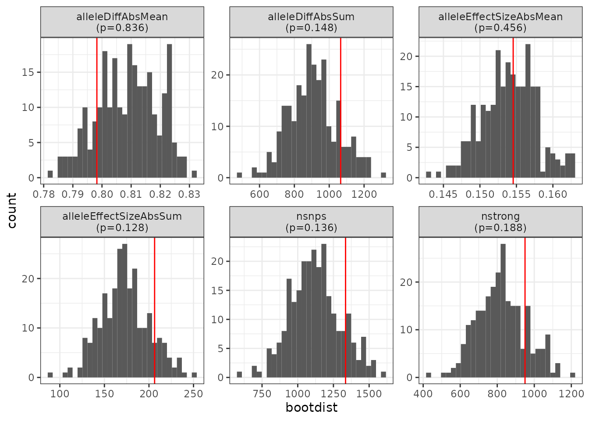

Introduction
Motivation
The motifbreakR package provides functions to assess how single nucleotide polymorphisms (SNPs) disrupt transcript factor binding sites (TFBS). The tfboot package provides helper functions to aid in assessing the statistical significance of TFBS disruption in interval sets, typically defined by -5kb upstream promoter regions on genes of interest.
An example question might be: we have these 123 genes of interest that we think are important for XYZ phenotype. Can you assess the degree to which SNPs in the promoter region of these genes disrupt TFBS? Is this disruption in these 123 genes statistically significant as compared to SNPs from randomly selected sets of the same number of genes?
Setup
To run this vignette, you’ll need the chicken BSGenome+TxDb+org.db packages, plyranges, and motifbreakR packages, which can be installed from bioconductor. You’ll also need to install this tfboot package, which you can do from source, or directly from GitHub.
install.packages("BiocManager")
BiocManager::install(c("BSgenome.Ggallus.UCSC.galGal6",
"org.Gg.eg.db",
"TxDb.Ggallus.UCSC.galGal6.refGene",
"plyranges",
"motifbreakR"), update=FALSE)
install.packages("devtools")
devtools::install_github("https://github.com/colossal-compsci/tfboot", upgrade=FALSE)Basic usage
First, load the libraries you need for this analysis.
library(BSgenome.Ggallus.UCSC.galGal6)
library(TxDb.Ggallus.UCSC.galGal6.refGene)
library(org.Gg.eg.db)
library(plyranges)
library(motifbreakR)
library(tfboot)Use read_vcf() to read in your VCF. The example used
here is a VCF with variants from chicken (Gallus gallus)
chromosome 33. Note that your VCF must be pre-filtered to only include
variant sites. More information on how to do this can be found in the
help page (?read_vcf).
vcf_file <- system.file("extdata", "galGal6-chr33.vcf.gz", package="tfboot", mustWork = TRUE)
snps <- read_vcf(file=vcf_file, bsgenome=BSgenome.Ggallus.UCSC.galGal6)
snps
#> GRanges object with 20000 ranges and 6 metadata columns:
#> seqnames ranges strand | paramRangeID REF
#> <Rle> <IRanges> <Rle> | <factor> <DNAStringSet>
#> chr33:10054_G/T chr33 10054 * | NA G
#> chr33:11031_T/C chr33 11031 * | NA T
#> chr33:11148_T/G chr33 11148 * | NA T
#> chr33:11400_G/C chr33 11400 * | NA G
#> chr33:11496_G/A chr33 11496 * | NA G
#> ... ... ... ... . ... ...
#> chr33:7810067_A/C chr33 7810067 * | NA A
#> chr33:7810166_G/A chr33 7810166 * | NA G
#> chr33:7810888_T/G chr33 7810888 * | NA T
#> chr33:7810896_T/A chr33 7810896 * | NA T
#> chr33:7811431_G/A chr33 7811431 * | NA G
#> ALT QUAL FILTER SNP_id
#> <DNAStringSet> <numeric> <character> <character>
#> chr33:10054_G/T T NA . chr33:10054_G/T
#> chr33:11031_T/C C NA . chr33:11031_T/C
#> chr33:11148_T/G G NA . chr33:11148_T/G
#> chr33:11400_G/C C NA . chr33:11400_G/C
#> chr33:11496_G/A A NA . chr33:11496_G/A
#> ... ... ... ... ...
#> chr33:7810067_A/C C NA . chr33:7810067_A/C
#> chr33:7810166_G/A A NA . chr33:7810166_G/A
#> chr33:7810888_T/G G NA . chr33:7810888_T/G
#> chr33:7810896_T/A A NA . chr33:7810896_T/A
#> chr33:7811431_G/A A NA . chr33:7811431_G/A
#> -------
#> seqinfo: 1 sequence from an unspecified genome; no seqlengthsThe get_upstream_snps() function from tfboot takes in a
SNP list and a TxDb object, and turns intervals 5kb upstream of the
transcription start site for all genes in the list. See the help for
?get_upstream_snps() and the helper function it calls,
get_upstream(). This function also respects strand
information embedded in the genome. For an example on building a TxDb
object from a GTF, see
?GenomicFeatures::makeTxDbPackage.
Here we get the 5kb upstream promoter region of all genes with any SNPs (limited to chromosome 33 in this example).
prosnps <- get_upstream_snps(snps, txdb=TxDb.Ggallus.UCSC.galGal6.refGene)
prosnps
#> GRanges object with 685 ranges and 8 metadata columns:
#> seqnames ranges strand | paramRangeID REF
#> <Rle> <IRanges> <Rle> | <factor> <DNAStringSet>
#> chr33:3630733_A/G chr33 3630733 * | NA A
#> chr33:3630900_A/T chr33 3630900 * | NA A
#> chr33:3631029_G/T chr33 3631029 * | NA G
#> chr33:3631819_G/C chr33 3631819 * | NA G
#> chr33:3631916_T/C chr33 3631916 * | NA T
#> ... ... ... ... . ... ...
#> chr33:7721873_G/A chr33 7721873 * | NA G
#> chr33:7721994_A/T chr33 7721994 * | NA A
#> chr33:7722028_G/T chr33 7722028 * | NA G
#> chr33:7722600_C/A chr33 7722600 * | NA C
#> chr33:7723117_A/C chr33 7723117 * | NA A
#> ALT QUAL FILTER SNP_id
#> <DNAStringSet> <numeric> <character> <character>
#> chr33:3630733_A/G G NA . chr33:3630733_A/G
#> chr33:3630900_A/T T NA . chr33:3630900_A/T
#> chr33:3631029_G/T T NA . chr33:3631029_G/T
#> chr33:3631819_G/C C NA . chr33:3631819_G/C
#> chr33:3631916_T/C C NA . chr33:3631916_T/C
#> ... ... ... ... ...
#> chr33:7721873_G/A A NA . chr33:7721873_G/A
#> chr33:7721994_A/T T NA . chr33:7721994_A/T
#> chr33:7722028_G/T T NA . chr33:7722028_G/T
#> chr33:7722600_C/A A NA . chr33:7722600_C/A
#> chr33:7723117_A/C C NA . chr33:7723117_A/C
#> gene_id ranges_original
#> <character> <IRanges>
#> chr33:3630733_A/G 776487 3635699-3637068
#> chr33:3630900_A/T 776487 3635699-3637068
#> chr33:3631029_G/T 776487 3635699-3637068
#> chr33:3631819_G/C 776487 3635699-3637068
#> chr33:3631916_T/C 776487 3635699-3637068
#> ... ... ...
#> chr33:7721873_G/A 424136 7724062-7729597
#> chr33:7721994_A/T 424136 7724062-7729597
#> chr33:7722028_G/T 424136 7724062-7729597
#> chr33:7722600_C/A 424136 7724062-7729597
#> chr33:7723117_A/C 424136 7724062-7729597
#> -------
#> seqinfo: 1 sequence from galGal6 genomeNow, let’s select a set of five random genes of interest.
set.seed(123)
mygenes <- sample(unique(prosnps$gene_id), 5)
mygenes
#> [1] "693249" "408041" "100316005" "408042" "100498692"What are those genes?
AnnotationDbi::select(org.Gg.eg.db,
key=mygenes,
columns=c("ENTREZID", "SYMBOL", "GENENAME"),
keytype="ENTREZID")
#> ENTREZID SYMBOL GENENAME
#> 1 693249 CAPN1 calpain 1
#> 2 408041 KRT6A keratin 6A
#> 3 100316005 MIR2130 microRNA 2130
#> 4 408042 KRT75 keratin 75
#> 5 100498692 MIR3534 microRNA 3534We can then pull out SNPs in the 5kb promoter region of just those SNPs.
myprosnps <-
prosnps |>
filter(gene_id %in% mygenes)
myprosnps
#> GRanges object with 60 ranges and 8 metadata columns:
#> seqnames ranges strand | paramRangeID REF
#> <Rle> <IRanges> <Rle> | <factor> <DNAStringSet>
#> chr33:3804056_G/C chr33 3804056 * | NA G
#> chr33:3805103_A/C chr33 3805103 * | NA A
#> chr33:3805111_G/T chr33 3805111 * | NA G
#> chr33:3805659_T/C chr33 3805659 * | NA T
#> chr33:3805709_C/G chr33 3805709 * | NA C
#> ... ... ... ... . ... ...
#> chr33:7473031_T/C chr33 7473031 * | NA T
#> chr33:7473583_G/A chr33 7473583 * | NA G
#> chr33:7473834_G/T chr33 7473834 * | NA G
#> chr33:7473857_T/C chr33 7473857 * | NA T
#> chr33:7475206_A/C chr33 7475206 * | NA A
#> ALT QUAL FILTER SNP_id
#> <DNAStringSet> <numeric> <character> <character>
#> chr33:3804056_G/C C NA . chr33:3804056_G/C
#> chr33:3805103_A/C C NA . chr33:3805103_A/C
#> chr33:3805111_G/T T NA . chr33:3805111_G/T
#> chr33:3805659_T/C C NA . chr33:3805659_T/C
#> chr33:3805709_C/G G NA . chr33:3805709_C/G
#> ... ... ... ... ...
#> chr33:7473031_T/C C NA . chr33:7473031_T/C
#> chr33:7473583_G/A A NA . chr33:7473583_G/A
#> chr33:7473834_G/T T NA . chr33:7473834_G/T
#> chr33:7473857_T/C C NA . chr33:7473857_T/C
#> chr33:7475206_A/C C NA . chr33:7475206_A/C
#> gene_id ranges_original
#> <character> <IRanges>
#> chr33:3804056_G/C 100498692 3808915-3808996
#> chr33:3805103_A/C 100498692 3808915-3808996
#> chr33:3805111_G/T 100498692 3808915-3808996
#> chr33:3805659_T/C 100498692 3808915-3808996
#> chr33:3805709_C/G 100498692 3808915-3808996
#> ... ... ...
#> chr33:7473031_T/C 100316005 7470778-7470842
#> chr33:7473583_G/A 100316005 7470778-7470842
#> chr33:7473834_G/T 100316005 7470778-7470842
#> chr33:7473857_T/C 100316005 7470778-7470842
#> chr33:7475206_A/C 100316005 7470778-7470842
#> -------
#> seqinfo: 1 sequence from galGal6 genomeHow many SNPs in the promoter region of each of my genes of interest?
table(myprosnps$gene_id)
#>
#> 100316005 100498692 408041 408042 693249
#> 11 15 12 7 15What’s the median number of SNPs across all genes?
Now, let’s run motifbreakR analysis with the 2022 JASPAR database on
those 5 genes. First let’s look at the TFBS motifs. See
?MotifDb for more info.
motifs <- subset(MotifDb, dataSource=="jaspar2022")
motifs
#> MotifDb object of length 1956
#> | Created from downloaded public sources, last update: 2022-Mar-04
#> | 1956 position frequency matrices from 1 source:
#> | jaspar2022: 1956
#> | 19 organism/s
#> | Hsapiens: 691
#> | Athaliana: 568
#> | Scerevisiae: 170
#> | Dmelanogaster: 150
#> | NA: 144
#> | Mmusculus: 143
#> | other: 90
#> Mmusculus-jaspar2022-Arnt-MA0004.1
#> Mmusculus-jaspar2022-Ahr::Arnt-MA0006.1
#> Dmelanogaster-jaspar2022-br-MA0010.1
#> Dmelanogaster-jaspar2022-br-MA0011.1
#> Dmelanogaster-jaspar2022-br-MA0012.1
#> ...
#> Athaliana-jaspar2022-HSFC1-MA1667.2
#> Athaliana-jaspar2022-NAC017-MA1674.2
#> Athaliana-jaspar2022-NAC062-MA1676.2
#> Athaliana-jaspar2022-NTL8-MA1678.2
#> Athaliana-jaspar2022-ERF11-MA1001.3Now, let’s run motifbreakR on these SNPs in the promoter regions of these 5 genes. The result of the motifbreakR analysis is a GenomicRanges object.
mbresGR <- motifbreakR(myprosnps, pwmList=motifs)Additionally, let’s run motifbreakR on all SNPs for promoter regions in all genes (remember, this entire analysis is restricted to chromosome 33 only).
mballGR <- motifbreakR(prosnps, pwmList=motifs)Let’s use tfboot’s mb_to_tibble() function to create a
compact tibble for each of these. We’ll use this data for our
statistical analysis coming up next.
mbres <- mbresGR |> mb_to_tibble()
mball <- mballGR |> mb_to_tibble()
mbres
#> # A tibble: 1,335 × 10
#> gene_id SNP_id tf pctRef pctAlt scoreRef scoreAlt effect alleleDiff
#> <chr> <chr> <chr> <dbl> <dbl> <dbl> <dbl> <chr> <dbl>
#> 1 100316005 chr33:7472… ACE2 0.986 0.783 4.85 3.87 strong -0.980
#> 2 100316005 chr33:7472… ADR1 0.759 0.917 3.34 4.01 weak 0.673
#> 3 100316005 chr33:7471… AFT2 0.964 0.878 5.50 5.02 weak -0.480
#> 4 100316005 chr33:7472… AFT2 0.902 0.740 5.15 4.24 strong -0.911
#> 5 100316005 chr33:7473… AFT2 0.879 0.705 5.02 4.04 strong -0.980
#> 6 100316005 chr33:7472… AGL42 0.859 0.693 5.14 4.15 strong -0.986
#> 7 100316005 chr33:7471… AGL55 0.695 0.861 3.97 4.91 strong 0.939
#> 8 100316005 chr33:7472… ALX3 0.972 0.776 4.23 3.43 strong -0.806
#> 9 100316005 chr33:7473… ALX3 0.919 0.773 4.02 3.42 weak -0.600
#> 10 100316005 chr33:7473… ARG80 0.731 0.961 3.16 4.15 strong 0.993
#> # ℹ 1,325 more rows
#> # ℹ 1 more variable: alleleEffectSize <dbl>
mball
#> # A tibble: 12,689 × 10
#> gene_id SNP_id tf pctRef pctAlt scoreRef scoreAlt effect alleleDiff
#> <chr> <chr> <chr> <dbl> <dbl> <dbl> <dbl> <chr> <dbl>
#> 1 100315917 chr33:5706… ARG80 0.979 0.749 4.23 3.24 strong -0.993
#> 2 100315917 chr33:5706… ARG81 0.991 0.825 5.89 4.90 strong -0.982
#> 3 100315917 chr33:5703… ARGFX 0.781 0.889 5.06 5.74 weak 0.677
#> 4 100315917 chr33:5706… ARR1 0.634 0.880 2.53 3.42 strong 0.892
#> 5 100315917 chr33:5707… AT1G… 0.882 0.779 7.60 6.73 strong -0.861
#> 6 100315917 chr33:5704… AT3G… 0.784 0.892 5.13 5.79 weak 0.666
#> 7 100315917 chr33:5706… ATHB… 0.781 0.890 4.12 4.67 weak 0.552
#> 8 100315917 chr33:5706… ATHB… 0.721 0.868 4.98 5.98 strong 0.993
#> 9 100315917 chr33:5706… ATHB… 0.813 0.966 5.32 6.32 strong 0.998
#> 10 100315917 chr33:5706… ATHB… 0.778 0.931 4.98 5.94 strong 0.963
#> # ℹ 12,679 more rows
#> # ℹ 1 more variable: alleleEffectSize <dbl>In reality, when you perform the motifbreakR results across the whole
genome, the analysis will take some time (perhaps hours), depending on
the number of cores allocated to the job. I recommend that once you
perform this once for every gene in the genome, you save the compact
tibble (mball in this example) using save() or
saveRDS() to read in later, avoiding the need to re-run the
genome-wide motifbreakR analysis each time. You can do this with
something like this:
Assessing statistical signficance
Motivation
In our example above we have a set of five genes. We’ve run motifbreakR on SNPs in the 5kb upstream region of those genes, and we want to ask questions such as “are there statistically more SNPs in the promoters of these five genes than a random selection of five genes?” or “do SNPs in the promoters of these five genes statistically enriched for those that disrupt TFBS, more so than randomly selected genes?” The tfboot package can help answer these questions.
We initially ran motifbreakR on our set of five genes of interest. To address the kinds of questions above, we could go back to the set of all genes (again, here just those limited to chromosome 33 for demonstration purposes), and randomly draw 1000 sets of 5 genes, run motifbreakR on SNPs in those promoters, then compare our stats to the empirical null distribution to obtain a p-value. However, running motifbreakR on five genes takes time. Imagine our gene set was 300 genes. Then we would need to run motifbreakR 300,000 times to generate our null distribution. Further, if we had multiple gene sets, e.g., one with 100 genes, another with 500 genes, another with 400 genes, we would need to run motifbreakR 1,000,000 times to generate null distrubitions of 1,000 bootstraps for each of these intervals.
Instead, we can generate the motifbreakR results for all genes, do this only once, then save those results to file, as we’ve done above. Then, when we need to compute our bootstrap sampling to create the empirical null distribution, we only have to bootstrap precomputed results, rather than bootstrapping the motifbreakR procedure itself.
Demonstration
Let’s look again at our motifbreakR results on our genes of interest:
# Look at the data
mbres
#> # A tibble: 1,335 × 10
#> gene_id SNP_id tf pctRef pctAlt scoreRef scoreAlt effect alleleDiff
#> <chr> <chr> <chr> <dbl> <dbl> <dbl> <dbl> <chr> <dbl>
#> 1 100316005 chr33:7472… ACE2 0.986 0.783 4.85 3.87 strong -0.980
#> 2 100316005 chr33:7472… ADR1 0.759 0.917 3.34 4.01 weak 0.673
#> 3 100316005 chr33:7471… AFT2 0.964 0.878 5.50 5.02 weak -0.480
#> 4 100316005 chr33:7472… AFT2 0.902 0.740 5.15 4.24 strong -0.911
#> 5 100316005 chr33:7473… AFT2 0.879 0.705 5.02 4.04 strong -0.980
#> 6 100316005 chr33:7472… AGL42 0.859 0.693 5.14 4.15 strong -0.986
#> 7 100316005 chr33:7471… AGL55 0.695 0.861 3.97 4.91 strong 0.939
#> 8 100316005 chr33:7472… ALX3 0.972 0.776 4.23 3.43 strong -0.806
#> 9 100316005 chr33:7473… ALX3 0.919 0.773 4.02 3.42 weak -0.600
#> 10 100316005 chr33:7473… ARG80 0.731 0.961 3.16 4.15 strong 0.993
#> # ℹ 1,325 more rows
#> # ℹ 1 more variable: alleleEffectSize <dbl>
# How many genes
length(unique(mbres$gene_id))
#> [1] 5
# How many TFBS are disrupted for each gene?
table(mbres$gene_id)
#>
#> 100316005 100498692 408041 408042 693249
#> 436 206 361 131 201
# How many "strong" in each gene?
table(mbres$gene_id, mbres$effect)
#>
#> strong weak
#> 100316005 326 110
#> 100498692 152 54
#> 408041 225 136
#> 408042 101 30
#> 693249 146 55Now, let’s review the motifbreakR on all genes of interest
# Look at the data (note the number of rows)
mball
#> # A tibble: 12,689 × 10
#> gene_id SNP_id tf pctRef pctAlt scoreRef scoreAlt effect alleleDiff
#> <chr> <chr> <chr> <dbl> <dbl> <dbl> <dbl> <chr> <dbl>
#> 1 100315917 chr33:5706… ARG80 0.979 0.749 4.23 3.24 strong -0.993
#> 2 100315917 chr33:5706… ARG81 0.991 0.825 5.89 4.90 strong -0.982
#> 3 100315917 chr33:5703… ARGFX 0.781 0.889 5.06 5.74 weak 0.677
#> 4 100315917 chr33:5706… ARR1 0.634 0.880 2.53 3.42 strong 0.892
#> 5 100315917 chr33:5707… AT1G… 0.882 0.779 7.60 6.73 strong -0.861
#> 6 100315917 chr33:5704… AT3G… 0.784 0.892 5.13 5.79 weak 0.666
#> 7 100315917 chr33:5706… ATHB… 0.781 0.890 4.12 4.67 weak 0.552
#> 8 100315917 chr33:5706… ATHB… 0.721 0.868 4.98 5.98 strong 0.993
#> 9 100315917 chr33:5706… ATHB… 0.813 0.966 5.32 6.32 strong 0.998
#> 10 100315917 chr33:5706… ATHB… 0.778 0.931 4.98 5.94 strong 0.963
#> # ℹ 12,679 more rows
#> # ℹ 1 more variable: alleleEffectSize <dbl>
# How many genes
length(unique(mball$gene_id))
#> [1] 56
# How many TFBS are disrupted for each gene? Just show the top 5
table(mball$gene_id) |>
sort(decreasing = TRUE) |>
head(n=5)
#>
#> 100316005 102466833 408041 429501 100859133
#> 436 427 361 360 343The tfboot function mb_summarize will summarize the
results from a motifbreakR analysis into a single-row table. See help
for ?mb_summarize for details. This returns a table with
the following columns:
-
ngenes: The number of genes in the SNP set. -
nsnps: The number of SNPs total. -
nstrong: The number of SNPs with a “strong” effect. -
alleleDiffAbsMeanThe mean of the absolute values of thealleleDiffscores. -
alleleDiffAbsSumThe sum of the absolute values of thealleleDiffscores. -
alleleEffectSizeAbsMeanThe mean of the absolute values of thealleleEffectSizescores. -
alleleEffectSizeAbsSumThe sum of the absolute values of thealleleEffectSizescores.
Let’s run it on our set of genes of interest:
mbsmry <- mb_summarize(mbres)
mbsmry
#> # A tibble: 1 × 7
#> ngenes nsnps nstrong alleleDiffAbsMean alleleDiffAbsSum alleleEffectSizeAbsM…¹
#> <int> <int> <int> <dbl> <dbl> <dbl>
#> 1 5 1335 950 0.798 1066. 0.155
#> # ℹ abbreviated name: ¹alleleEffectSizeAbsMean
#> # ℹ 1 more variable: alleleEffectSizeAbsSum <dbl>So, how do these numbers compare to, for example, the number of SNPs, number of strong effects, the average absolute allele difference, or average absolute effect size, from a set of SNPs in promoters in a randomly chosen sample of the same number of genes?
We can use the mb_bootstrap function to generate an
empirical null distribution given the precomputed set of motifbreakR for
the universe of all genes. This function takes motifbreakR results as a
tibble (from mb_to_tibble), draws boots random
samples of ngenes genes, and returns as a list (1) a wide
tibble with results for each bootstrap, and (2) another tibble with the
distribution of each metric as a column. We set the random number
generator for reproducibility, and we limit the number of bootstrap
resamples here for speed.
set.seed(42)
mbboot <- mb_bootstrap(mball, ngenes=5, boots=250)
mbboot$bootwide
#> # A tibble: 250 × 9
#> boot genes ngenes nsnps nstrong alleleDiffAbsMean alleleDiffAbsSum
#> <int> <chr> <int> <int> <int> <dbl> <dbl>
#> 1 1 431304;426469;… 5 1062 750 0.797 847.
#> 2 2 426183;395959;… 5 1244 914 0.808 1005.
#> 3 3 102465361;4261… 5 886 655 0.812 720.
#> 4 4 396007;407779;… 5 1514 1139 0.815 1234.
#> 5 5 426883;396544;… 5 925 623 0.787 728.
#> 6 6 425059;429035;… 5 1350 1026 0.821 1109.
#> 7 7 408042;426880;… 5 823 627 0.823 677.
#> 8 8 396170;425058;… 5 1262 910 0.805 1016.
#> 9 9 102466833;4261… 5 1263 963 0.822 1038.
#> 10 10 429035;408042;… 5 1289 987 0.823 1061.
#> # ℹ 240 more rows
#> # ℹ 2 more variables: alleleEffectSizeAbsMean <dbl>,
#> # alleleEffectSizeAbsSum <dbl>
mbboot$bootdist
#> # A tibble: 6 × 2
#> metric bootdist
#> <chr> <list>
#> 1 alleleDiffAbsMean <dbl [250]>
#> 2 alleleDiffAbsSum <dbl [250]>
#> 3 alleleEffectSizeAbsMean <dbl [250]>
#> 4 alleleEffectSizeAbsSum <dbl [250]>
#> 5 nsnps <dbl [250]>
#> 6 nstrong <dbl [250]>Finally, we can use the mb_bootstats() function to take
in the summary on our genes of interest (output from
mb_summary()) and the bootstrapped empirical null
distribution (from mb_bootstrap() run on motifbreakR
results from all genes), to compare our critical values (in
mbsmry here) to our empirical null distribution (called
mbboot here).
bootstats <- mb_bootstats(mbsmry = mbsmry, mbboot = mbboot)
bootstats
#> # A tibble: 6 × 5
#> metric stat bootdist bootmax p
#> <chr> <dbl> <list> <dbl> <dbl>
#> 1 nsnps 1335 <dbl [250]> 1597 0.136
#> 2 nstrong 950 <dbl [250]> 1210 0.188
#> 3 alleleDiffAbsMean 0.798 <dbl [250]> 0.831 0.836
#> 4 alleleDiffAbsSum 1066. <dbl [250]> 1304. 0.148
#> 5 alleleEffectSizeAbsMean 0.155 <dbl [250]> 0.163 0.456
#> 6 alleleEffectSizeAbsSum 206. <dbl [250]> 251. 0.128We can also visualize this graphically with the
plot_bootstats() function, which takes the results from
mb_bootstats() as input.
plot_bootstats(bootstats)
From these results we see that there is no meaningful statistical enrichment of TFBS-disrupting SNPs in this set of genes compared to randomly selected genes (this is expected – our five genes were randomly chosen).
Caveats
The set of motifbreakR results for all genes must be recomputed on each new sample. This vignette demonstrates how to precompute the motifbreakR results once for the universe of all genes. You can use this precomputed set to very quickly bootstrap an empirical null distribution of a set of k randomly selected genes. However, this background set is unique to each sample. Each sample will have a different set of SNPs, and this precomputing procedure computes motifbreakR results for SNPs in upstream regions of all genes. Similarly, if the upstream region changes from the default 5,000 bp, results for all genes will need to be recomputed again.
SNP density matters. Promoter regions with a larger number of SNPs are going to have larger values for the sum of the absolute values of the allele difference and effect sizes. This should not affect the mean of these metrics.
Genes, not transcripts. This vignette demonstrates
running motifbreakR on SNPs in 5kb upstream regions defined by
genes (see the help for ?get_upstream and
?get_upstream_snps and
?GenomicFeatures::genes). This is using the most 5’
transcript as the transcription start site, and looking 5kb
upstream of that position. This does not consider alternative
transcription start sites. Further development is required to contend
with multiple sets of TFBS motif disruption scores for the same gene if
transcripts are to be used.
Session Information
#> R version 4.3.2 (2023-10-31)
#> Platform: x86_64-pc-linux-gnu (64-bit)
#> Running under: Ubuntu 22.04.3 LTS
#>
#> Matrix products: default
#> BLAS: /usr/lib/x86_64-linux-gnu/openblas-pthread/libblas.so.3
#> LAPACK: /usr/lib/x86_64-linux-gnu/openblas-pthread/libopenblasp-r0.3.20.so; LAPACK version 3.10.0
#>
#> locale:
#> [1] LC_CTYPE=C.UTF-8 LC_NUMERIC=C LC_TIME=C.UTF-8
#> [4] LC_COLLATE=C.UTF-8 LC_MONETARY=C.UTF-8 LC_MESSAGES=C.UTF-8
#> [7] LC_PAPER=C.UTF-8 LC_NAME=C LC_ADDRESS=C
#> [10] LC_TELEPHONE=C LC_MEASUREMENT=C.UTF-8 LC_IDENTIFICATION=C
#>
#> time zone: UTC
#> tzcode source: system (glibc)
#>
#> attached base packages:
#> [1] grid stats4 stats graphics grDevices utils datasets
#> [8] methods base
#>
#> other attached packages:
#> [1] tfboot_1.0.1
#> [2] motifbreakR_2.16.0
#> [3] MotifDb_1.44.0
#> [4] plyranges_1.22.0
#> [5] org.Gg.eg.db_3.18.0
#> [6] TxDb.Ggallus.UCSC.galGal6.refGene_3.10.0
#> [7] GenomicFeatures_1.54.3
#> [8] AnnotationDbi_1.64.1
#> [9] Biobase_2.62.0
#> [10] BSgenome.Ggallus.UCSC.galGal6_1.4.2
#> [11] BSgenome_1.70.1
#> [12] rtracklayer_1.62.0
#> [13] BiocIO_1.12.0
#> [14] Biostrings_2.70.2
#> [15] XVector_0.42.0
#> [16] GenomicRanges_1.54.1
#> [17] GenomeInfoDb_1.38.5
#> [18] IRanges_2.36.0
#> [19] S4Vectors_0.40.2
#> [20] BiocGenerics_0.48.1
#>
#> loaded via a namespace (and not attached):
#> [1] bitops_1.0-7 filelock_1.0.3
#> [3] R.oo_1.26.0 tibble_3.2.1
#> [5] XML_3.99-0.16.1 rpart_4.1.21
#> [7] DirichletMultinomial_1.44.0 lifecycle_1.0.4
#> [9] lattice_0.21-9 ensembldb_2.26.0
#> [11] MASS_7.3-60 backports_1.4.1
#> [13] magrittr_2.0.3 Hmisc_5.1-1
#> [15] sass_0.4.8 rmarkdown_2.25
#> [17] jquerylib_0.1.4 yaml_2.3.8
#> [19] Gviz_1.46.1 DBI_1.2.1
#> [21] CNEr_1.38.0 RColorBrewer_1.1-3
#> [23] ade4_1.7-22 abind_1.4-5
#> [25] zlibbioc_1.48.0 purrr_1.0.2
#> [27] R.utils_2.12.3 AnnotationFilter_1.26.0
#> [29] biovizBase_1.50.0 RCurl_1.98-1.14
#> [31] nnet_7.3-19 pracma_2.4.4
#> [33] VariantAnnotation_1.48.1 rappdirs_0.3.3
#> [35] GenomeInfoDbData_1.2.11 seqLogo_1.68.0
#> [37] annotate_1.80.0 pkgdown_2.0.7
#> [39] codetools_0.2-19 DelayedArray_0.28.0
#> [41] xml2_1.3.6 tidyselect_1.2.0
#> [43] farver_2.1.1 matrixStats_1.2.0
#> [45] BiocFileCache_2.10.1 base64enc_0.1-3
#> [47] GenomicAlignments_1.38.2 jsonlite_1.8.8
#> [49] motifStack_1.46.0 Formula_1.2-5
#> [51] systemfonts_1.0.5 tools_4.3.2
#> [53] progress_1.2.3 ragg_1.2.7
#> [55] TFMPvalue_0.0.9 Rcpp_1.0.12
#> [57] glue_1.7.0 gridExtra_2.3
#> [59] SparseArray_1.2.3 xfun_0.41
#> [61] MatrixGenerics_1.14.0 dplyr_1.1.4
#> [63] withr_3.0.0 fastmap_1.1.1
#> [65] latticeExtra_0.6-30 fansi_1.0.6
#> [67] caTools_1.18.2 digest_0.6.34
#> [69] R6_2.5.1 textshaping_0.3.7
#> [71] colorspace_2.1-0 GO.db_3.18.0
#> [73] gtools_3.9.5 poweRlaw_0.80.0
#> [75] jpeg_0.1-10 dichromat_2.0-0.1
#> [77] biomaRt_2.58.2 RSQLite_2.3.5
#> [79] R.methodsS3_1.8.2 tidyr_1.3.1
#> [81] utf8_1.2.4 generics_0.1.3
#> [83] data.table_1.15.0 prettyunits_1.2.0
#> [85] httr_1.4.7 htmlwidgets_1.6.4
#> [87] S4Arrays_1.2.0 TFBSTools_1.40.0
#> [89] pkgconfig_2.0.3 gtable_0.3.4
#> [91] blob_1.2.4 htmltools_0.5.7
#> [93] ProtGenerics_1.34.0 scales_1.3.0
#> [95] png_0.1-8 knitr_1.45
#> [97] rstudioapi_0.15.0 tzdb_0.4.0
#> [99] reshape2_1.4.4 rjson_0.2.21
#> [101] checkmate_2.3.1 curl_5.2.0
#> [103] cachem_1.0.8 stringr_1.5.1
#> [105] parallel_4.3.2 foreign_0.8-85
#> [107] restfulr_0.0.15 desc_1.4.3
#> [109] pillar_1.9.0 vctrs_0.6.5
#> [111] dbplyr_2.4.0 xtable_1.8-4
#> [113] cluster_2.1.4 htmlTable_2.4.2
#> [115] evaluate_0.23 readr_2.1.5
#> [117] cli_3.6.2 compiler_4.3.2
#> [119] Rsamtools_2.18.0 rlang_1.1.3
#> [121] crayon_1.5.2 labeling_0.4.3
#> [123] interp_1.1-6 plyr_1.8.9
#> [125] fs_1.6.3 stringi_1.8.3
#> [127] deldir_2.0-2 BiocParallel_1.36.0
#> [129] munsell_0.5.0 lazyeval_0.2.2
#> [131] Matrix_1.6-1.1 hms_1.1.3
#> [133] bit64_4.0.5 ggplot2_3.4.4
#> [135] KEGGREST_1.42.0 highr_0.10
#> [137] SummarizedExperiment_1.32.0 memoise_2.0.1
#> [139] bslib_0.6.1 bit_4.0.5
#> [141] splitstackshape_1.4.8